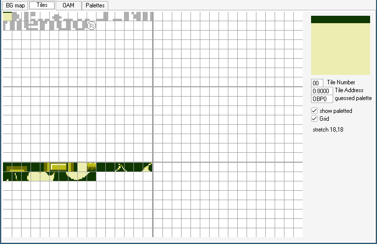

対象物
背景は、画面全体を一度に動かしたいときにはとても便利ですが、すべてに適しているわけではありません。 たとえば、メニューのカーソル、RPGのNPCやプレイヤー、シムアップの弾、アルカノイドクローンのボール...などは、背景とは別に動く必要があります。 ありがたいことに、ゲームボーイはこれらに最適な機能を持っています 今回はオブジェクト（「OBJ」とも言います）についてお話しましょう。
上記の説明で、「オブジェクト」ではなく「スプライト」という言葉を思い浮かべたかもしれません。 スプライト」という言葉は文脈によって様々な意味を持つので、混乱を避けるために、このチュートリアルでは、オブジェクト、メタスプライト、アクターなどの特定の代替語を使用するようにしています。
各オブジェクトは、画面上の任意の位置に1つまたは2つのタイル（それぞれ8×8、8×16ピクセル）を描画できる。 したがって、オブジェクトは画面上の位置、タイルID（タイルマップと同様）、および「属性」と呼ばれる追加プロパティからなる。 これらの追加プロパティは、例えば、タイルを反転して表示することができる。 詳細は後ほど説明する。
タイルマップがVRAMに格納されるように、オブジェクトはOAM（Object Attribute Memory）と呼ばれるメモリ領域に格納される。 上で述べたように、オブジェクトは以下の要素で構成されている。
- 画面上の位置
- タイルID
- "属性 "について
OAMは160バイトで、160∕4＝40なので、ゲームボーイには常時40個のオブジェクトが格納されていることになる。
しかし、OAMのオブジェクトのYとXの座標バイトは、画面上の位置を保存しません！その代わりに、画面上のX位置は保存されたX位置から8を引いたもので、画面上のY位置は保存されたY位置から16を引いたものです。 オブジェクトの表示を停止するには、Y位置を0にするなどして画面外に出せばいいのです。
このオフセットは任意ではありません！オブジェクトの最大サイズを8×16ピクセルとすると、画面の左端や上端でオブジェクトを切り取ることができます。 ファミコンなどでは、このオフセットがないため、画面の左端や上端にぶつかると、必ずオブジェクトが消えてしまうことがわかります。
実験しながらモノを発見しよう
まず、ゲームボーイの電源を入れたとき、OAMは半ランダムな値の束で満たされ、画面をランダムなゴミで覆うかもしれません。 オブジェクトを初めて有効にする前に、まずOAMをクリアすることでそれを修正しましょう。CopyTilemapループの直後に以下を追加してみましょう。
ld a, 0 ld b, 160 ld hl,_OAMRAMClearOam: ld [hli], a dec b jp nz,ClearOamThis is a good time to do that, since just like VRAM, the screen must be off to safely access OAM.
Once OAM is clear, we can draw an object by writing its properties.
ld hl, _OAMRAM
ld a, 128 + 16
ld [hli], a
ld a, 16 + 8
ld [hli], a
ld a, 0
ld [hli], a
ld [hl], a
Remember that each object in OAM is 4 bytes, in the order Y, X, Tile ID, Attributes. So, the object’s top-left pixel lies 128 pixels from the top of the screen, and 16 from its left. The tile ID and attributes are both set to 0.
You may remember from the previous lesson that we’re already using tile ID 0, as it’s the start of our background’s graphics. However, by default objects and backgrounds use a different set of tiles, at least for the first 128 IDs. Tiles with IDs 128–255 are shared by both, which is useful if you have a tile that’s used both on the background and by an object.
If you press F5 in BGB to open the VRAM viewer, you should see three distinct sections.

Because we need to load this to a different area, we’ll use the address $8000 and load a graphic for our game’s paddle.
Let’s do so right after CopyTilemap:
; Copy the tile data
ld de, Paddle
ld hl, $8000
ld bc, PaddleEnd - Paddle
CopyPaddle:
ld a, [de]
ld [hli], a
inc de
dec bc
ld a, b
or a, c
jp nz, CopyPaddle
And don’t forget to add Paddle to the bottom of your code.
Paddle:
dw `13333331
dw `30000003
dw `13333331
dw `00000000
dw `00000000
dw `00000000
dw `00000000
dw `00000000
PaddleEnd:
Finally, let’s enable objects and see the result.
Objects must be enabled by the familiar rLCDC register, otherwise they just don’t show up.
(This is why we didn’t have to clear OAM in the previous lessons.)
We will also need to initialize one of the object palettes, rOBP0.
There are actually two object palettes, but we’re only going to use one.
; Turn the LCD on
ld a, LCDCF_ON | LCDCF_BGON | LCDCF_OBJON
ld [rLCDC], a
; During the first (blank) frame, initialize display registers
ld a, %11100100
ld [rBGP], a
ld a, %11100100
ld [rOBP0], a
Movement
Now that you have an object on the screen, let’s move it around.
Previously, the Done loop did nothing; let’s rename it to Main and use it to move our object.
We’re going to wait for VBlank before changing OAM, just like we did before turning off the screen.
Main:
; Wait until it's *not* VBlank
ld a, [rLY]
cp 144
jp nc, Main
WaitVBlank2:
ld a, [rLY]
cp 144
jp c, WaitVBlank2
; Move the paddle one pixel to the right.
ld a, [_OAMRAM + 1]
inc a
ld [_OAMRAM + 1], a
jp Main
🤨
Here, we are accessing OAM without turning the LCD off, but it’s still safe. Explaining why requires a more thorough explanation of the Game Boy’s rendering, so let’s ignore it for now.
Now you should see the paddle moving… very quickly. Because it moves by a pixel ever frame, it’s going at a speed of 60 pixels per second! To slow this down, we’ll use a variable.
So far, we have only worked with the CPU registers, but you can create global variables too!
To do this, let’s create another section, but putting it in WRAM0 instead of ROM0.
Unlike ROM (“Read-Only Memory”), RAM (“Random-Access Memory”) can be written to; thus, WRAM, or Work RAM, is where we can store our game’s variables.
Add this to the bottom of your file:
SECTION "Counter", WRAM0
wFrameCounter: db
Now we’ll use the wFrameCounter variable to count how many frames have passed since we last moved the paddle.
Every 10th frame, we’ll move the paddle by one pixel, slowing it down to 6 pixels per second.
Don’t forget that RAM is filled with garbage values when the Game Boy starts, so we need to initialize our variables before first using them.
ld a, 0
ld [wFrameCounter], a
Main:
ld a, [rLY]
cp 144
jp nc, Main
WaitVBlank2:
ld a, [rLY]
cp 144
jp c, WaitVBlank2
ld a, [wFrameCounter]
inc a
ld [wFrameCounter], a
cp a, 15 ; Every 15 frames (a quarter of a second), run the following code
jp nz, Main
; Reset the frame counter back to 0
ld a, 0
ld [wFrameCounter], a
; Move the paddle one pixel to the right.
ld a, [_OAMRAM + 1]
inc a
ld [_OAMRAM + 1], a
jp Main
Alright! Up next is us taking control of that little paddle.